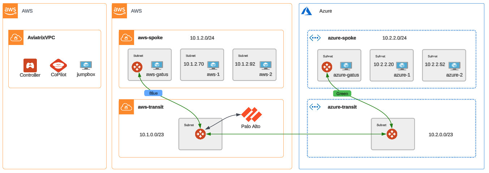

Network Segmentation#
Important
Estimated time to complete: 15 minutes
In this lab, the goal is segment the two spoke networks into their own network domains and then reconnect them via policy. This operates at the spoke level. Think of it as a way to isolate networks that should never connect - prod and development networks, for example.
There is no infrastructure to deploy as this is all Aviatrix configuration.
Initial Connectivity#
We’re starting with the connected topology we ended with in the FireNet lab.

As such open connectivity between clouds is established.

In CoPilot, navigate to Networking and Network Segmentation in the left-hand nav.
Note that there are no network domains configured or applied.
Configure and apply segmentation#
Back to your terraform.tfvars file. Update the apply_segmentation variable from false to true. Be sure to save the file after making the update.
Then from LXTerminal on the jumpbox, issue the following command.
terraform apply --auto-approve
It should only take a minute to apply the network domains to each spoke - Blue for AWS and Green for Azure.
Segmentation Results#
We have now placed each spoke network in its own network segment.

Refresh your network segmentation screen in CoPilot. You’ll now see that each spoke has been defined, but not connected.
Click on Network Domains in the top nav. You’ll see the domain definitions and their associations.
Let’s check back in the gatus. As expected, the spokes are now fully isolated. The connectivity exists, but Aviatrix will not route unconnected network domains.

Configure and apply policy#
Back to your terraform.tfvars file. Update the apply_policy variable from false to true. Be sure to save the file after making the update.
Then from LXTerminal on the jumpbox, issue the following command.
terraform apply --auto-approve
It should only take a minute to apply the policy to connect the Blue and Green network domains.
Policy Results#
Back to CoPilot, refresh the Network Domains page. You should now see that the domains are now connected.
Clicking on Overview on the top nav you’ll see it visually.
And, of course gatus is once again reporting connectivity across clouds.
Code#
Let’s take a look at the code behind the apply. Looking at the root main.tf you can see that the segmentation module was executed because apply_segmentation was set to true.
module "segmentation" {
count = var.apply_segmentation ? 1 : 0
source = "./segmentation"
azure_transit_gw_name = module.mcna[0].transit_azure.transit_gateway.gw_name
aws_transit_gw_name = module.mcna[0].transit_aws.transit_gateway.gw_name
azure_spoke_gw_name = module.mcna[0].spoke_gw_aws.spoke_gateway.gw_name
aws_spoke_gw_name = module.mcna[0].spoke_gw_azure.spoke_gateway.gw_name
apply_policy = var.apply_policy
}
Inside the local segmentation module, you’ll see:
Definitions for each network domain -
blueandgreenThe association between the network domain(s) and their transit and spoke gateways
The policy connecting the
blueandgreennetwork domains
Use the navigation below when you’re ready to move onto the next section.